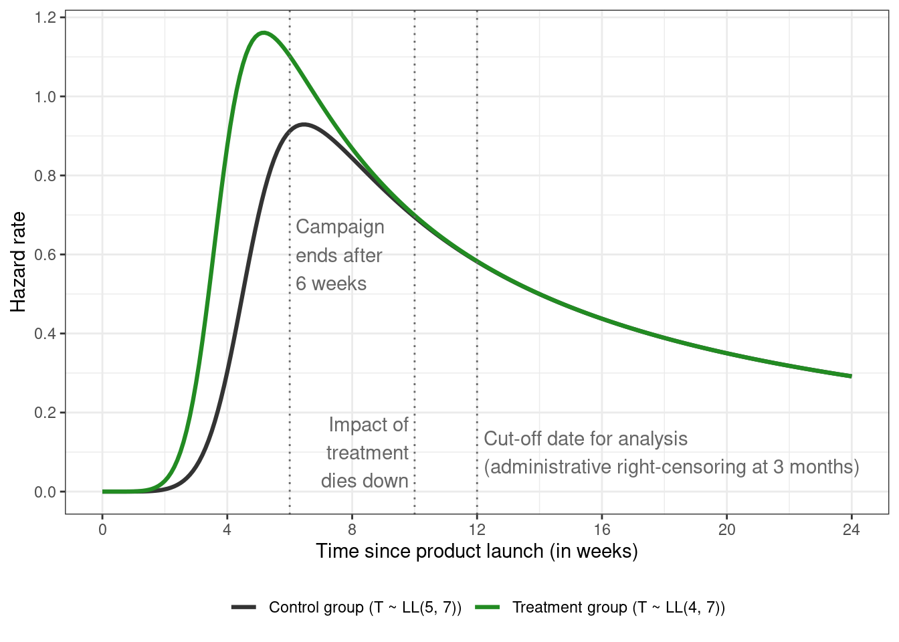
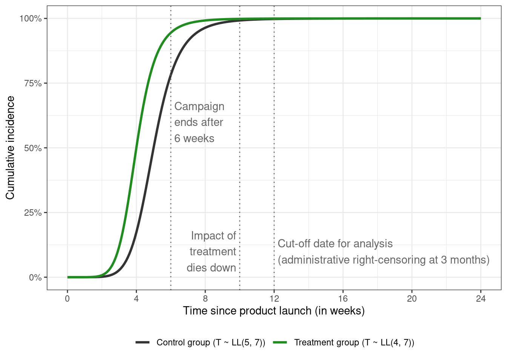
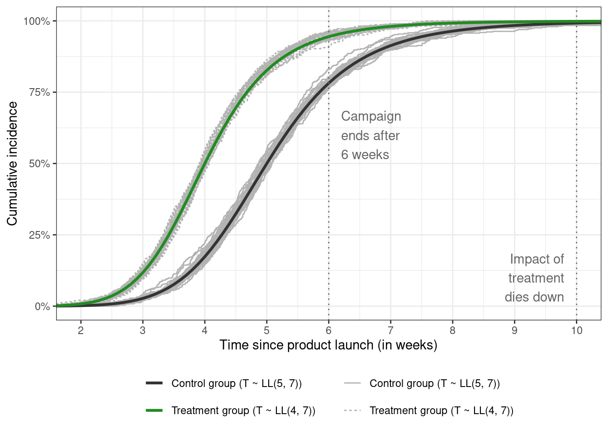
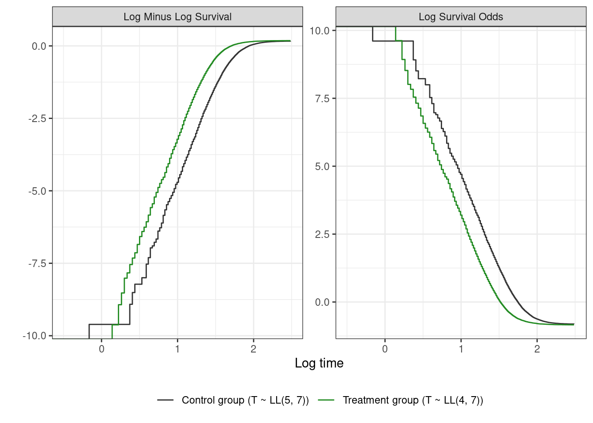
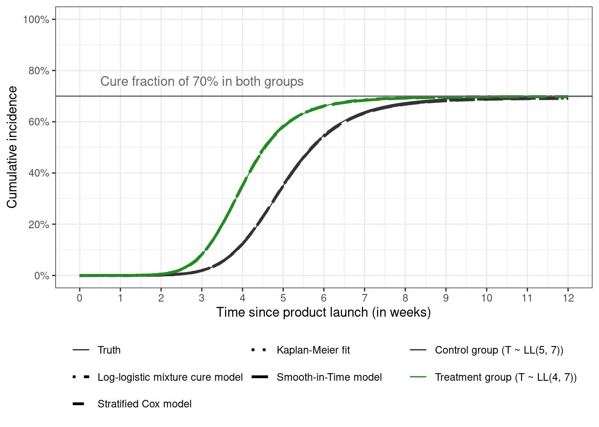
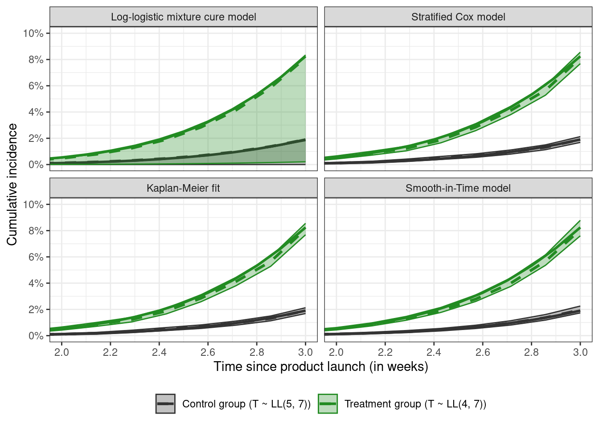

This post is about simulating data from a log-logistic accelerated failure time mixture cure model with censoring. It also visually compares the estimated cumulative incidence curves obtained from several time-to-event estimators on a large simulated dataset.
It’s been quite a while since I’ve worked with time-to-event data and models. Also known as survival analysis, it is ideally suited for situations where the interest is not only in predicting whether an event will occur, but how long it will take for it to occur.
So I’m writing this post to reacquaint myself with some of the key concepts — and to learn some new things along the way — by simulating and analyzing data from a fictitious experiment motivated by a real experiment I worked on many moons ago.
Before writing any code, the following packages are attached:
library(tidyverse)
── Attaching core tidyverse packages ──────────────────────── tidyverse 2.0.0 ──
✔ dplyr 1.1.4 ✔ readr 2.1.5
✔ forcats 1.0.0 ✔ stringr 1.5.1
✔ ggplot2 3.5.1 ✔ tibble 3.2.1
✔ lubridate 1.9.3 ✔ tidyr 1.3.1
✔ purrr 1.0.2
── Conflicts ────────────────────────────────────────── tidyverse_conflicts() ──
✖ dplyr::filter() masks stats::filter()
✖ dplyr::lag() masks stats::lag()
ℹ Use the conflicted package (<http://conflicted.r-lib.org/>) to force all conflicts to become errors
Suppose a marketing manager is interested in the time it takes for an upgraded product to be adopted after launch among users of the previous version of the product. This rate-of-upgrade could be potentially hastened via a marketing campaign, which can be assumed to have a transient response1 — that is, the impact of this campaign decreases with time once the campaign has concluded.
1 Not sure what this is called in marketing jargon but this is how it’s called in engineering
Key concepts
One of the key objects in survival analysis is the hazard function (\(h(t)\)), i.e., the rate at which the event of interest (e.g., product purchase) occurs as a function of time. Mathematically, it is expressed for continuous-time models as
\[
h(t) =
\lim_{\Delta t \to 0} \frac{P(t \le T \lt t + \Delta t | T \ge t)}{\Delta t}
\]
where \(T\) indicates the event time of interest which varies from individual to individual, \(t\) is a specific value of time, and \(\Delta t\) is some very small increment in time. This event rate function cannot be interpreted as a probability but only as a rate, since it can have values larger than 1.
In case of discrete-time models, the hazard rate can be interpreted as the (conditional) probability \(P(T = t | T \ge t)\).
For our experiment, suppose the hazards in the treatment and control groups look like this:
Code
hazard_function_loglogistic <-function(alpha, beta, min_t =0, max_t =24, step_t =0.1) { time <-seq(min_t, max_t, step_t) numerator <- (beta / alpha) * ((time / alpha) ^ (beta -1)) denominator <-1+ ((time / alpha) ^ beta)tibble(alpha = alpha,beta = beta,parameters =paste0("LL(", alpha, ", ", beta, ")"),time = time,hazard = numerator / denominator )}loglogistic_attributes <-bind_rows(hazard_function_loglogistic(alpha =4, beta =7),hazard_function_loglogistic(alpha =5, beta =7)) %>%mutate(parameters =case_when( alpha ==4~"Treatment group (T ~ LL(4, 7))", alpha ==5~"Control group (T ~ LL(5, 7))" ) ) loglogistic_attributes %>%ggplot(aes(x = time, y = hazard, group = parameters, color = parameters)) +geom_line(linewidth =1.1) +# campaign end dategeom_vline(xintercept =6, linetype ="dotted", color ="gray40") +annotate(geom ="text", x =6.2, y =0.6, color ="gray40",label ="Campaign\nends after\n6 weeks", hjust ="left") +# impact of treatment disappears by 2.5 monthsgeom_vline(xintercept =10, linetype ="dotted", color ="gray40") +annotate(geom ="text", x =9.8, y =0.1, color ="gray40",label ="Impact of\ntreatment\ndies down", hjust ="right") +# analysis date (right-censoring at 3 months)geom_vline(xintercept =12, linetype ="dotted", color ="gray40") +annotate(geom ="text", x =12.2, y =0.1, color ="gray40",label = glue::glue("Cut-off date for analysis\n", "(administrative right-censoring ", "at 3 months)"), hjust ="left") +scale_color_manual(values =c("gray20", "forestgreen")) +scale_x_continuous(breaks =seq(0, 24, 4)) +scale_y_continuous(breaks =seq(0, 1.2, 0.2)) +labs(x ="Time since product launch (in weeks)", y ="Hazard rate") +theme(legend.position ="bottom", legend.title =element_blank())

These hazard functions can be expressed mathematically as \[
h(t; \alpha, \beta) = \frac{(\beta/\alpha) (t / \alpha)^{\beta - 1}}{1 + (t / \alpha)^\beta}
\]
and correspond to a log-logistic distribution (abbreviated as \(\text{LL}(\alpha, \beta)\)) for the event times with scale parameter \(\alpha = 4\) for the treatment group, \(\alpha = 5\) for the control group, and shape parameter \(\beta = 7\) identical in both groups.
The motivation for picking the \(\text{LL}(\alpha, \beta)\) model for this experiment is that it’s a well known example of an accelerated failure time (AFT) model. The impact of treatment is assumed to be positive and transient, where the treatment “accelerates” the event process compared to the control group, with this “accelerating” treatment group peak occurring before the peak in the control group. The hazard function in the treatment group tapers off after some time (8 weeks in this case). The non-monotonic nature — i.e., of the function first increasing and then decreasing with time — can refer to the time it takes for the information about the new product to spread through the population.
The AFT model can be contrasted with the proportional hazards (PH) model, where the hazard rates for the two groups are assumed to be proportional over time. The Weibull distribution is a prominent example, although it can be parameterized as an AFT model as well. Compared to the log-logistic distribution, it has a monotonic hazard function
with shape parameter \(\beta\), and scale parameter \(\alpha\), so is not suited for settings where the hazard is expected to go up and then down (or other non-monotonic shapes).
The hazard rate is a bit hard to interpret due to the fact that 1) it’s a conditional measure, 2) is a rate rather than a probability (so can have values > 1), and 3) depends on the chosen unit of time.
A related quantity known as the survivor function (aka survival curve) is the marginal probability of being event-free (“surviving”) beyond time \(t\). Mathematically,
where \(h(u)\) is the hazard function (defined above).
When the outcome is death due to disease (in healthcare), or machine failure (in engineering), it makes sense to look at factors (or treatments) that prolong survival. In the scenario where the event occurring faster is seen as positive, the survivor function can be flipped to get the cumulative incidence curve (CIC)
\[
P[T \le t] = F(t) = 1 - S(t)
\]
where the curve traces the probability of experiencing the event before some time \(t\), and \(F(t)\) is the CDF of the event times. The cumulative incidence curve corresponding to \(\text{LL}(\alpha, \beta)\) is given by \(F(t) = [ 1 + (t / \alpha)^ {-\beta}] ^ {-1}\) (with the survivor function \(S(t) = [1 + (t / \alpha)^ {\beta}] ^ {-1}\) — notice the sign difference for \(\beta\))
Code
survivor_loglogistic <-function(alpha, beta, time) {1/ (1+ ((time / alpha) ^ beta))}loglogistic_attributes <- loglogistic_attributes %>%mutate(survival =survivor_loglogistic(alpha, beta, time),cdf =1- survival ) cumulative_incidence_plot <- loglogistic_attributes %>%ggplot(aes(x = time, y = cdf, group = parameters, color = parameters)) +geom_line(linewidth =1.1) +# campaign end dategeom_vline(xintercept =6, linetype ="dotted", color ="gray40") +annotate(geom ="text", x =6.2, y =0.6, color ="gray40",label ="Campaign\nends after\n6 weeks", hjust ="left") +# impact of treatment disappears by 2.5 monthsgeom_vline(xintercept =10, linetype ="dotted", color ="gray40") +annotate(geom ="text", x =9.8, y =0.1, color ="gray40",label ="Impact of\ntreatment\ndies down", hjust ="right") +# analysis date (right-censoring at 3 months)geom_vline(xintercept =12, linetype ="dotted", color ="gray40") +annotate(geom ="text", x =12.2, y =0.1, color ="gray40",label = glue::glue("Cut-off date for analysis\n", "(administrative right-censoring ", "at 3 months)"), hjust ="left") +scale_color_manual(values =c("gray20", "forestgreen")) +scale_y_continuous(labels = scales::label_percent()) +labs(x ="Time since product launch (in weeks)", y ="Cumulative incidence") +theme(legend.position ="bottom", legend.title =element_blank())cumulative_incidence_plot +scale_x_continuous(breaks =seq(0, 24, 4))

As expected of CDFs, the CIC starts at 0% for both groups at \(t = 0\) and keeps increasing over time until it reaches 100%.
Simulate true event times
Finally, we can get around to simulating some data from our experiment. Normally I’d use either the coxed::sim.survdata() function or the simsurv::simsurv() function, but in the interest of learning2 I’m going to do this manually using the cumulative hazard inversion method (usually attributed to this paper and concisely described in the simsurv package vignette here).
2 These packages don’t support log-logistic models out-of-the-box anyway.
For simulating data from a Weibull PH model as opposed to the log-logistic AFT model, see this, this, or the papers in the previous paragraph. This paper is also pretty useful for simulating data from more complex settings.
Plugging in the value of \(F(T_i)\) for the log-logistic distribution, and doing some algebra gives the function for simulating the true (or latent) event time \(T_i\) for the \(i\)-th individual from a log-logistic distribution (matches equation 8 from this paper).
The Wikipedia page for log-logistic distribution mentions that \(\text{log}(\alpha_i) = X_i^T \gamma\) can be used to specify covariates that influence the scale parameter \(\alpha_i\) — with \(\gamma\) the (\(p\)-dimensional row) vector of coefficients, and \(X_i\) the (\(p\)-dimensional row) vector of covariates for individual \(i\). The shape parameter \(\beta\) is assumed to be constant across covariate levels, but it’s possible to model \(\beta\) as a function of covariates as well with \(\text{log}(\beta_i) = Z_i^T \delta\) where \(Z\) and \(X\) can be identical, partly overlapping, or completely disjoint covariate sets, and \(\delta\) the associated coefficients. Using logs ensures that both \(\alpha_i\) and \(\beta_i\) will have values greater than zero. This gives
The estimated CDFs for each sample are added to a zoomed-in version of cumulative incidence figure above.
Code
cumulative_incidence_plot_samples <- cumulative_incidence_plot # for this hacky solution to overlay the true curves over# the sampled curves, see # https://stackoverflow.com/questions/20249653/insert-layer-underneath-existing-layers-in-ggplot2-objectcumulative_incidence_plot_samples$layers <-c(stat_ecdf(data = loglogistic_samples, aes(x = time, linetype = parameters, group =interaction(sim_id, parameters)), inherit.aes =FALSE, color ="gray70" ), cumulative_incidence_plot$layers)cumulative_incidence_plot_samples +coord_cartesian(xlim =c(2, 10)) +scale_x_continuous(breaks =seq(2, 10, 1)) +guides(color =guide_legend(nrow =2), linetype =guide_legend(nrow =2) )

The empirical CDFs of survival times for each sample fluctuate around the true curve in each group, which is reassuring. These simulated event times are the true individual event times for that specific sample of individuals. These are not always observed, which brings us to our next point.
Add censoring
One complication I’ve ignored so far is (right-)censoring. Individuals are said to be right-censored if they haven’t had the event of interest yet at the time of analysis and therefore only a lower bound on their true event time is observed.
The most common data structure for survival analysis is the tuple \((Y_i, \delta_i)\) where \(Y_i = \text{min}(T_i, C_i)\) is the smaller of the event time \(T_i\) or the censoring time \(C_i\), and \(\delta_i = I(T_i \le C_i)\) is the event indicator with value 1 indicating the true event time is observed, and 0 indicating that the observation is censored. The censoring indicator is \(1 - \delta_i\).
Non-informative administrative (or Type-1) right censoring is the simplest type of censoring where the censoring time is the same for all individuals. If two analyses are carried out — one after three weeks, and another after twelve weeks — then the same individual with true \(T_i = 4.5\) is recorded as \((Y_i = 3, \delta_i = 0)\) in the first analysis and \((Y_i = 4.5, \delta_i = 1)\) in the second analysis.
This can be applied to the simulated event times easily enough using simple conditionals
latent time3 cens3 time6 cens6
Min. : 0.84 Min. :0.84 Min. :0.00 Min. :0.84 Min. :0.00
1st Qu.: 3.73 1st Qu.:3.00 1st Qu.:1.00 1st Qu.:3.73 1st Qu.:0.00
Median : 4.45 Median :3.00 Median :1.00 Median :4.45 Median :0.00
Mean : 4.64 Mean :2.97 Mean :0.93 Mean :4.49 Mean :0.13
3rd Qu.: 5.33 3rd Qu.:3.00 3rd Qu.:1.00 3rd Qu.:5.33 3rd Qu.:0.00
Max. :20.05 Max. :3.00 Max. :1.00 Max. :6.00 Max. :1.00
time12 cens12
Min. : 0.84 Min. :0.0000
1st Qu.: 3.73 1st Qu.:0.0000
Median : 4.45 Median :0.0000
Mean : 4.64 Mean :0.0015
3rd Qu.: 5.33 3rd Qu.:0.0000
Max. :12.00 Max. :1.0000
The overall true event time distribution — in the latent column — goes up to 20 weeks, but due to censoring, 93% of observations are censored at 3 weeks, 13% at 6 weeks, and fewer than 1% at twelve weeks, with the maximum time equal to the censoring time. The larger the proportion of censoring, the larger the difference between the true mean and the mean of the censored event time distribution.
In more complex settings, censoring times can be simulated from (say) an exponential or gamma distribution that is assumed to be independent of the event times, or the censoring distribution can vary as a function of covariates. The next plot overlays the true event time densities in each treatment group on top of the censoring distribution \(C_i \sim \text{Gamma}(6, 1)\)
Code
set.seed(43)loglogistic_samples %>%select(parameters, time) %>%bind_rows(tibble(parameters ="Censoring times ~ Gamma(6, 1)",time =rgamma(floor(n_total /2), shape =6, scale =1) ) ) %>%ggplot(aes(x = time, fill = parameters, color = parameters)) +geom_density(alpha =0.6) +xlab("Time since product launch (in weeks)") +theme(legend.title =element_blank(), legend.position ="bottom") +scale_color_manual(values =c("purple3", "gray20", "forestgreen")) +scale_fill_manual(values =c("purple3", "gray20", "forestgreen"))
# A tibble: 2 × 5
parameters mean_latent mean_censoring_time mean_observed_time mean_cens
<chr> <dbl> <dbl> <dbl> <dbl>
1 Treatment group … 4.12 5.99 3.81 0.25
2 Control group (T… 5.16 6 4.46 0.4
Summary of the simulated data shows that 25% of the individuals in the treatment group are censored compared to 40% of the individuals in the control group over the full range of time values (about 20 weeks).
Add cure
Another complication is the presence of (statistical) cure. Some individuals will never purchase the product irrespective of whichever group they fall in. Which means that if the follow-up period is extended from 12 weeks to 150 or 500 weeks, these so-called “cured” individuals will still show up as censored because their true survival time is effectively infinite. Ignoring cure and using a cox model can lead to biased estimates of the quantities we’re interested in, as figure 2 of this paper visually demonstrates. It also gives an overview of the different types of (major) cure models. Another reference I found useful was this one3.
3 This is the link to the Bertand and Legrand book chapter mentioned in the references below.
The family of mixture cure model has the following survivor function form
with two parts: the first part is based on the incidence which is whether an individual is cured or not (\(\pi(I) = P[B = 1 | I]\) is the probability of being cured as a function of covariate \(I\), and \(B\) is the latent cure status); and the second part is concerned with latency, which is about how long it takes for the event to occur among the uncured. \(L\) is the set of factors that affect latency. Overlap between \(I\) and \(L\) is possible.
The other major family of cure models is the promotion time cure model with the survivor function
which has a PH interpretation. In this model, parameters affecting cure and survival are not separated like they are in the mixture cure model.
Finally, this paper mentions relative survival / excess mortality models as well, which considers individuals in the treatment or control group to be cured when the hazard rate decreases to background levels.
The simplest cure model is the constant one, where the cure fraction is the same across all groups. This can be simulated by generating a latent “cure” variable \(B_i \sim \text{Bernoulli}(\pi_i)\) (with \(\pi_i = \pi = 0.3\) denoting the proportion of cured individuals in the next code chunk)
# A tibble: 3 × 4
cured cens6 n p
<int> <dbl> <int> <dbl>
1 0 0 18898 63
2 0 1 2117 7.1
3 1 1 8985 30
If six weeks is used as the cutoff time for analysis, 63% of the individuals overall have experienced the event of interest, and 37% are censored of which 7% are the censored uncured observations, and 30% are the censored cured individuals.
The logistic model for incidence can be more elaborate — the following code generates data where the cure fraction varies as a function of (say) age
As a sanity check, the log-logistic mixture cure model can be fit to the simulated data using the flexsurvcure package to see whether we can recover the parameters used to generate data.
simulated_data %>%# rename the treatment variable to make the printed summary nicer lookingrename(trt = treatment) %>%flexsurvcure(formula =Surv(time, event, type ="right") ~ age,data = .,dist ="llogis",link ="logistic",anc =list(scale =~ trt,shape =~ trt ),mixture =TRUE )
The code takes a minute or two to run, so the saved model can be read back in.
Code
read_rds("sanity-check-model.rds")
Call:
flexsurvcure(formula = Surv(time, event, type = "right") ~ age,
data = ., dist = "llogis", link = "logistic", mixture = TRUE,
anc = list(scale = ~trt, shape = ~trt))
Estimates:
data mean est L95% U95% se exp(est)
theta NA 0.98025 0.97650 0.98341 NA NA
shape NA 7.14335 6.97237 7.31851 0.08829 NA
scale NA 4.98067 4.94343 5.01819 0.01907 NA
age 57.15674 -0.06809 -0.07126 -0.06492 0.00162 0.93418
shape(trt) 0.50436 -0.01890 -0.04914 0.01134 0.01543 0.98127
scale(trt) 0.50436 -0.21891 -0.22755 -0.21027 0.00441 0.80340
L95% U95%
theta NA NA
shape NA NA
scale NA NA
age 0.93122 0.93714
shape(trt) 0.95204 1.01140
scale(trt) 0.79648 0.81037
N = 50000, Events: 15676, Censored: 34324
Total time at risk: 228001.9
Log-likelihood = -42997.34, df = 6
AIC = 86006.67
The coefficients for the incidence submodel are usually on the logit scale, and the coefficients for the latency submodel are usually on the log scale. The printed output is a little confusing at first glance since the coefficients in the est column are either untransformed (age, shape and scale parameters in the treatment group), exponentiated (scale and shape parameters in the control group), or inverse-logit transformed (theta). It may have been better to split the printed output into two sections — one for the incidence model, and the other for latency. Similar to how mgcv gives separate output for the parametric and the spline effects.
The theta parameter is the intercept in the incidence submodel, with a true value of 4 on the logit scale, and therefore \(P[B = 1 | \text{age} = 0] = 0.982\) (calling plogis(4) in R or calculating \(1 / (1 + \text{exp}(-4))\)). The estimated value is 0.9802, or qlogis(0.98025) = 3.904 on the logit scale. The age coefficient is estimated to be -0.068 on the logit scale with the true value set to -0.07. This corresponds to an odds ratio of \(\text{exp}(-0.06809) = 0.934\).
The shape parameter \(\beta\) of the log-logistic distribution in the latency submodel is very close to the true value of 7. The shape(trt) value is very close to the true value of 0, since \(\beta\) is assumed to be the same in each arm.
The scale parameter \(\alpha\) in the control group is very close (4.98) to the true value of 5. The coefficient for \(\alpha\) in the treatment group — with the true value of 4 — can be derived by either 1) multiplying the alpha in the control group by exp(scale(trt)) (so \(4.98067 \times 0.80340 \approx 4\)), or 2) by adding these up on the log scale and exponentiating the result (\(\text{exp}(\text{log}(4.98067) - 0.21891)\)).
This post could very well end now, but I already wrote the code for this section and I don’t feel like making another post, so I’ve included just the plots here with minimal code. The full code for this section can be found here.
Essentially, I’m simulating data with administrative censoring at three and twelve weeks, with a constant cure fraction of 30%, and visually comparing the derived cumulative incidence curves in each of the treatment and control groups from the survivor functions estimated via 1) a Kaplan-Meier fit, 2) a stratified cox model, 3) the casebase sampling approach described in this paper and implemented in the casebase package4, and 4) a log-logistic mixture cure model with the treatment status as a variable in both the incidence and latency submodels.
4 which I find extra attractive because it supports fitting penalized splines via the mgcv package
The following plot shows \(\text{log}(-\text{log}({\hat{S}(t)}))\) vs \(\text{log}(t)\) in the left panel, and \(\text{log}(\hat{S}(t) / (1 - \hat{S}(t)))\) vs \(\text{log}(t)\) in the right panel. The former is the log-minus-log-survival plot for assessing the proportional hazards assumption (parallel straight lines indicate a Weibull model may be a good fit), and the latter is the log-survival-odds plot for assessing the proportional odds assumption (straight parallel lines together imply a log-logistic AFT model). Chapter 7 from the third edition of the Kleinbaum and Klein book is a good reference on how to pick parametric models based on the information in these plots.
Code
# very weird behaviour when seed is set to 43 here# cure fraction ends up being 0 in the treatment group# and 60% in the control group. Overall it's correct with value of 0.3# this goes away by removing the set.seed(43) call before generating# or using any other seedset.seed(49)censored_and_cured_samples <- loglogistic_samples %>%mutate(# add cure status and modify time distribution accordinglylatent = time,cured =rbinom(n(), 1, 0.3),time =ifelse(cured ==1, 10000, time),# add censoring indicatortime3 =pmin(time, 3.0),cens3 =as.numeric(time >3.0),event3 =1- cens3,time6 =pmin(time, 6.0),cens6 =as.numeric(time >6.0),event6 =1- cens6,time12 =pmin(time, 12.0),cens12 =as.numeric(time >12.0),event12 =1- cens12,across(starts_with("event"), as.integer) )twelve_weeks_data <- censored_and_cured_samples %>%select(group = parameters, time = time12, event = event12)three_weeks_data <- censored_and_cured_samples %>%select(group = parameters, time = time3, event = event3)# plots for assessing the proportional hazards and proportional odds assumptionstwelve_weeks_data %>%survfit2(Surv(time, event, type ="right") ~ group, data = .) %>%tidy_survfit(time =seq(0, 12, 0.05), type ="survival") %>%select(time, strata, estimate) %>%mutate(lntime =log(time),`Log Minus Log Survival`=log(-log(estimate)),`Log Survival Odds`=log(estimate / (1- estimate)) ) %>%pivot_longer(cols =starts_with("Log ")) %>%ggplot(aes(x = lntime, y = value, color = strata, group =interaction(name, strata))) +geom_step() +labs(x ="Log time", y ="") +scale_color_manual(values =c("gray20", "forestgreen")) +coord_cartesian(xlim =c(-0.5, 2.5)) +theme(legend.position ="bottom", legend.title =element_blank()) +facet_wrap(~name, scales ="free_y")

The next figure shows the estimated curves from the different model overlaid on top of the true curve when analyzing data using the information available at twelve weeks. All the methods produce the same estimates and are nearly indistinguishable from the true curves.
Code
read_rds(file ="plot-data-12-weeks.rds") %>%ggplot(aes(x = time, y = CI_est, color = group)) +geom_line(aes(linetype = type, linewidth = type)) +# add cure fraction line and textgeom_hline(yintercept =0.7, color ="gray40", linetype ="solid") +annotate(geom ="text", x =0.5, y =0.76, color ="gray40",label ="Cure fraction of 70% in both groups", hjust ="left") +labs(x ="Time since product launch (in weeks)",y ="Cumulative incidence") +theme(legend.position ="bottom", legend.title =element_blank()) +scale_color_manual(values =c("gray20", "forestgreen")) +scale_linetype_manual(values =c("solid", "dotdash", "dashed", "dotted", "longdash")) +scale_linewidth_manual(values =c(0.4, 1.1, 1.1, 1.1, 1.1)) +scale_x_continuous(breaks =seq(0, 12, 1)) +scale_y_continuous(labels = scales::label_percent(), breaks =seq(0, 1, 0.2)) +coord_cartesian(xlim =c(0, 12), ylim =c(0, 1)) +guides(color =guide_legend(nrow =2),linetype =guide_legend(nrow =3) )

The true cumulative incidence curves are scaled from \([0, 1]\) to the interval \([0, 0.7]\) to correspond to a cure fraction of 0.3 using the usual rescaling formula for mapping \([x_{\text{min}}, x_{\text{}max}] \rightarrow [a,b]\) (with \(a = 0\), \(b = 0.7\), \(x_{\text{max}} = 1\), \(x_{\text{min}} = 0\), and \(x\) the probability \(P[T \le t]\) among the uncured)
\[
x_{\text{normalized}} = a + (b - a) \frac{x - x_{\text{min}}}{x_{\text{max}} - x_{\text{min}}}
\]
which just leads to multiplying the CDF in each group by 0.7.
Doing the analysis after three weeks shows some interesting results
All the curves are close. Facetting by estimator and plotting the pointwise confidence bands for week 2 shows that the mixture cure model runs into some difficulties
Code
plot_data_three_weeks %>%filter(time <=3, type !="Truth") %>%ggplot(aes(x = time, y = CI_est)) +# plot the true line on each panelgeom_line(data = { plot_data_three_weeks %>%filter(type =="Truth", time <=3) %>%select(-type) },inherit.aes =FALSE,aes(x = time, y = CI_est, group = group, color = group),linetype ="solid", linewidth =1 ) +# plot estimated curves and their confidence intervalsgeom_line(aes(color = group), linetype ="dashed", linewidth =1.1) +geom_ribbon(aes(ymin = CI_lcl, ymax = CI_ucl, color = group, fill = group), alpha =0.3) +labs(x ="Time since product launch (in weeks)",y ="Cumulative incidence") +theme(legend.position ="bottom", legend.title =element_blank()) +scale_color_manual(values =c("gray20", "forestgreen")) +scale_fill_manual(values =c("gray20", "forestgreen")) +scale_x_continuous(breaks =seq(2, 3, 0.2)) +scale_y_continuous(labels = scales::label_percent(), breaks =seq(0, 0.1, 0.02)) +facet_wrap(~type) +coord_cartesian(xlim =c(2, 3), ylim =c(0, 0.1))

In this case, based on the lack of plateauing of the KM fit at three weeks, assuming a cure model would not be justifiable, so one of the other three methods used here are probably better for estimating the CIC. At twelve weeks, the KM (or the CIC) curves have plateaued so a cure model might be a decent option, and the parameters of the mixture cure model can be identified.
Finally, I’m going to end this post with an interesting quote I came across in the Hanley and Miettinen paper from the inventor of the highly popular Cox model preferring to use a parametric model over the semi-parametric Cox model
Particularly notable are Cox’s own reflections (Reid, 1994) on the uses of his model:
Reid: How do you feel about the cottage industry that’s grown up around it [the Cox model]?
Cox: Don’t know, really. In the light of some of the further results one knows since, I think I would normally want to tackle problems parametrically, so I would take the underlying hazard to be a Weibull or something. I’m not keen on nonparametric formulations usually.
Reid: So if you had a set of censored survival data today, you might rather fit a parametric model, even though there was a feeling among the medical statisticians that that wasn’t quite right.
Cox: That’s right, but since then various people have shown that the answers are very insensitive to the parametric formulation of the underlying distribution [see, e.g., Cox and Oakes, Analysis of Survival Data, Chapter 8.5]. And if you want to do things like predict the outcome for a particular patient, it’s much more convenient to do that parametrically.
References
Bender, R., Augustin, T. and Blettner, M. (2005), Generating survival times to simulate Cox proportional hazards models. Statist. Med., 24: 1713-1723. https://doi.org/10.1002/sim.2059
Al-Shomrani, A.A., Shawky, A.I., Arif, O.H. et al. Log-logistic distribution for survival data analysis using MCMC. SpringerPlus5, 1774 (2016). https://doi.org/10.1186/s40064-016-3476-7
Hanley, J. & Miettinen, O. (2009). Fitting Smooth-in-Time Prognostic Risk Functions via Logistic Regression. The International Journal of Biostatistics, 5(1). https://doi.org/10.2202/1557-4679.1125
Source Code
---title: "Simulating data from a time-to-event experiment with non-proportional hazards, random censoring, and cure"date: "2024-09-22"#date-modified: "2024-09-22"categories: [Advertising, Experimentation, R, Simulation, Time-to-event]image: "post-image.png"footnotes-hover: truecode-fold: false---This post is about simulating data from a log-logistic accelerated failure time mixture cure model with censoring. It also visually compares the estimated cumulative incidence curves obtained from several time-to-event estimators on a large simulated dataset.It's been quite a while since I've worked with time-to-event data and models. Also known as *survival analysis*, it is ideally suited for situations where the interest is not only in predicting *whether* an event will occur, but *how long it will take for it to occur.*So I'm writing this post to reacquaint myself with some of the key concepts — and to learn some new things along the way — by simulating and analyzing data from a fictitious experiment motivated by a real experiment I worked on many moons ago.Before writing any code, the following packages are attached:```{r}library(tidyverse)library(flexsurvcure)library(ggsurvfit)theme_set(theme_bw())```Suppose a marketing manager is interested in the time it takes for an upgraded product to be adopted after launch among users of the previous version of the product. This rate-of-upgrade could be potentially hastened via a marketing campaign, which can be assumed to have a *transient response*[^1] — that is, the impact of this campaign decreases with time once the campaign has concluded.[^1]: Not sure what this is called in marketing jargon but this is how it's called in [engineering](https://en.wikipedia.org/wiki/Transient_response)## Key conceptsOne of the key objects in survival analysis is the [*hazard function*](https://en.wikipedia.org/wiki/Failure_rate) ($h(t)$), i.e., the rate at which the event of interest (e.g., product purchase) occurs as a function of time. Mathematically, it is expressed for *continuous-time* models as$$h(t) = \lim_{\Delta t \to 0} \frac{P(t \le T \lt t + \Delta t | T \ge t)}{\Delta t}$$where $T$ indicates the event time of interest which varies from individual to individual, $t$ is a specific value of time, and $\Delta t$ is some very small increment in time. This event rate function cannot be interpreted as a probability but only as a rate, since it can have values larger than 1.In case of *discrete-time* models, the hazard rate can be interpreted as the (conditional) probability $P(T = t | T \ge t)$.For our experiment, suppose the hazards in the treatment and control groups look like this:```{r}#| code-fold: truehazard_function_loglogistic <-function(alpha, beta, min_t =0, max_t =24, step_t =0.1) { time <-seq(min_t, max_t, step_t) numerator <- (beta / alpha) * ((time / alpha) ^ (beta -1)) denominator <-1+ ((time / alpha) ^ beta)tibble(alpha = alpha,beta = beta,parameters =paste0("LL(", alpha, ", ", beta, ")"),time = time,hazard = numerator / denominator )}loglogistic_attributes <-bind_rows(hazard_function_loglogistic(alpha =4, beta =7),hazard_function_loglogistic(alpha =5, beta =7)) %>%mutate(parameters =case_when( alpha ==4~"Treatment group (T ~ LL(4, 7))", alpha ==5~"Control group (T ~ LL(5, 7))" ) ) loglogistic_attributes %>%ggplot(aes(x = time, y = hazard, group = parameters, color = parameters)) +geom_line(linewidth =1.1) +# campaign end dategeom_vline(xintercept =6, linetype ="dotted", color ="gray40") +annotate(geom ="text", x =6.2, y =0.6, color ="gray40",label ="Campaign\nends after\n6 weeks", hjust ="left") +# impact of treatment disappears by 2.5 monthsgeom_vline(xintercept =10, linetype ="dotted", color ="gray40") +annotate(geom ="text", x =9.8, y =0.1, color ="gray40",label ="Impact of\ntreatment\ndies down", hjust ="right") +# analysis date (right-censoring at 3 months)geom_vline(xintercept =12, linetype ="dotted", color ="gray40") +annotate(geom ="text", x =12.2, y =0.1, color ="gray40",label = glue::glue("Cut-off date for analysis\n", "(administrative right-censoring ", "at 3 months)"), hjust ="left") +scale_color_manual(values =c("gray20", "forestgreen")) +scale_x_continuous(breaks =seq(0, 24, 4)) +scale_y_continuous(breaks =seq(0, 1.2, 0.2)) +labs(x ="Time since product launch (in weeks)", y ="Hazard rate") +theme(legend.position ="bottom", legend.title =element_blank())```These hazard functions can be expressed mathematically as\$$h(t; \alpha, \beta) = \frac{(\beta/\alpha) (t / \alpha)^{\beta - 1}}{1 + (t / \alpha)^\beta}$$and correspond to a [*log-logistic distribution*](https://en.wikipedia.org/wiki/Log-logistic_distribution) (abbreviated as $\text{LL}(\alpha, \beta)$) for the event times with *scale* parameter $\alpha = 4$ for the treatment group, $\alpha = 5$ for the control group, and shape parameter $\beta = 7$ identical in both groups.The motivation for picking the $\text{LL}(\alpha, \beta)$ model for this experiment is that it's a well known example of an [*accelerated failure time (AFT) model*](https://en.wikipedia.org/wiki/Accelerated_failure_time_model). The impact of treatment is assumed to be positive and transient, where the treatment "accelerates" the event process compared to the control group, with this "accelerating" treatment group peak occurring before the peak in the control group. The hazard function in the treatment group tapers off after some time (8 weeks in this case). The non-monotonic nature — i.e., of the function first increasing and then decreasing with time — can refer to the time it takes for the information about the new product to spread through the population.The AFT model can be contrasted with the [*proportional hazards (PH) model*](https://en.wikipedia.org/wiki/Proportional_hazards_model), where the hazard rates for the two groups are assumed to be proportional over time. The [*Weibull distribution*](https://en.wikipedia.org/wiki/Weibull_distribution) is a prominent example, although it can be parameterized as an AFT model as well. Compared to the log-logistic distribution, it has a monotonic hazard function$$h(t; \alpha, \beta) = \frac{\beta}{\alpha} \Bigg(\frac{x}{\alpha}\Bigg) ^ {\beta - 1}$$with shape parameter $\beta$, and scale parameter $\alpha$, so is not suited for settings where the hazard is expected to go up and then down (or other non-monotonic shapes).The hazard rate is a bit hard to interpret due to the fact that 1) it's a conditional measure, 2) is a rate rather than a probability (so can have values \> 1), and 3) depends on the chosen unit of time.A related quantity known as the *survivor function* (aka survival curve) is the marginal probability of being event-free ("surviving") beyond time $t$. Mathematically,$$S(t) = P[T > t] = \text{exp} \Bigg[ - \int_0^t h(u) du \Bigg]$$where $h(u)$ is the hazard function (defined above).When the outcome is death due to disease (in healthcare), or machine failure (in engineering), it makes sense to look at factors (or treatments) that prolong survival. In the scenario where the event occurring faster is seen as positive, the survivor function can be flipped to get the *cumulative incidence curve (CIC)*$$P[T \le t] = F(t) = 1 - S(t)$$where the curve traces the probability of experiencing the event before some time $t$, and $F(t)$ is the [CDF](https://en.wikipedia.org/wiki/Cumulative_distribution_function) of the event times. The cumulative incidence curve corresponding to $\text{LL}(\alpha, \beta)$ is given by $F(t) = [ 1 + (t / \alpha)^ {-\beta}] ^ {-1}$ (with the survivor function $S(t) = [1 + (t / \alpha)^ {\beta}] ^ {-1}$ — notice the sign difference for $\beta$)```{r}#| code-fold: truesurvivor_loglogistic <-function(alpha, beta, time) {1/ (1+ ((time / alpha) ^ beta))}loglogistic_attributes <- loglogistic_attributes %>%mutate(survival =survivor_loglogistic(alpha, beta, time),cdf =1- survival ) cumulative_incidence_plot <- loglogistic_attributes %>%ggplot(aes(x = time, y = cdf, group = parameters, color = parameters)) +geom_line(linewidth =1.1) +# campaign end dategeom_vline(xintercept =6, linetype ="dotted", color ="gray40") +annotate(geom ="text", x =6.2, y =0.6, color ="gray40",label ="Campaign\nends after\n6 weeks", hjust ="left") +# impact of treatment disappears by 2.5 monthsgeom_vline(xintercept =10, linetype ="dotted", color ="gray40") +annotate(geom ="text", x =9.8, y =0.1, color ="gray40",label ="Impact of\ntreatment\ndies down", hjust ="right") +# analysis date (right-censoring at 3 months)geom_vline(xintercept =12, linetype ="dotted", color ="gray40") +annotate(geom ="text", x =12.2, y =0.1, color ="gray40",label = glue::glue("Cut-off date for analysis\n", "(administrative right-censoring ", "at 3 months)"), hjust ="left") +scale_color_manual(values =c("gray20", "forestgreen")) +scale_y_continuous(labels = scales::label_percent()) +labs(x ="Time since product launch (in weeks)", y ="Cumulative incidence") +theme(legend.position ="bottom", legend.title =element_blank())cumulative_incidence_plot +scale_x_continuous(breaks =seq(0, 24, 4))```As expected of CDFs, the CIC starts at 0% for both groups at $t = 0$ and keeps increasing over time until it reaches 100%.## Simulate true event timesFinally, we can get around to simulating some data from our experiment. Normally I'd use either the [`coxed::sim.survdata()`](https://cran.r-project.org/web/packages/coxed/) function or the [`simsurv::simsurv()`](https://cran.r-project.org/web/packages/simsurv/) function, but in the interest of learning[^2] I'm going to do this manually using the *cumulative hazard inversion method* (usually attributed to [this paper](https://onlinelibrary.wiley.com/doi/10.1002/sim.2059) and concisely described in the `simsurv` package vignette [here](https://cran.r-project.org/web/packages/simsurv/vignettes/simsurv_technical.html)).[^2]: These packages don't support log-logistic models out-of-the-box anyway.For simulating data from a Weibull PH model as opposed to the log-logistic AFT model, see [this](https://stats.stackexchange.com/questions/135124/how-to-create-a-toy-survival-time-to-event-data-with-right-censoring), [this](https://stats.stackexchange.com/questions/603395/simulating-survival-times), or the papers in the previous paragraph. [This paper](https://onlinelibrary.wiley.com/doi/10.1002/sim.5823) is also pretty useful for simulating data from more complex settings.Plugging in the value of $F(T_i)$ for the log-logistic distribution, and doing some algebra gives the function for simulating the true (or latent) event time $T_i$ for the $i$-th individual from a log-logistic distribution (matches equation 8 from [this paper](https://www.ncbi.nlm.nih.gov/pmc/articles/PMC5061707/)).$$\begin{align*}S(T_i) = 1 - F(T_i) &= U_i \sim \text{Uniform}(0, 1) \\1 - \frac{1}{1 + (T_i / \alpha)^{-\beta}} &= U_i \\1 + \Bigg(\frac{T_i}{\alpha}\Bigg)^{-\beta} &= \frac{1}{1 - U_i} \\\Bigg(\frac{T_i}{\alpha}\Bigg)^{-\beta} &= \frac{U_i}{1 - U_i} \\\Bigg(\frac{\alpha}{T_i}\Bigg)^{\beta} &= \frac{1 - U_i}{U_i} \\\frac{\alpha}{T_i} &= \Bigg(\frac{1 - U_i}{U_i}\Bigg)^{1 / \beta} \\T_i &= \alpha (U_i^{-1} - 1)^{-1 / \beta} \\\end{align*}$$The Wikipedia page for log-logistic distribution mentions that $\text{log}(\alpha_i) = X_i^T \gamma$ can be used to specify covariates that influence the scale parameter $\alpha_i$ — with $\gamma$ the ($p$-dimensional row) vector of coefficients, and $X_i$ the ($p$-dimensional row) vector of covariates for individual $i$. The shape parameter $\beta$ is assumed to be constant across covariate levels, but it's possible to model $\beta$ as a function of covariates as well with $\text{log}(\beta_i) = Z_i^T \delta$ where $Z$ and $X$ can be identical, partly overlapping, or completely disjoint covariate sets, and $\delta$ the associated coefficients. Using logs ensures that both $\alpha_i$ and $\beta_i$ will have values greater than zero. This gives$$T_i = \text{exp}(X_i^T \gamma)(U_i^{-1} - 1)^{-1 / \text{exp}(Z_i^T \delta)}$$We can draw simulated event times across 30 experiments each with about 1000 individuals split evenly between the treatment and control groups.```{r}n_sim <-30n_sample <-1000n_total <- n_sim * n_sampleset.seed(43)loglogistic_samples <-tibble(sim_id =rep(1:n_sim, each = n_sample),id =rep(1:n_sample, times = n_sim),treatment =sample(c(0, 1), size = n_total,replace =TRUE, prob =c(0.5, 0.5)),parameters =case_when( treatment ==1~"Treatment group (T ~ LL(4, 7))", treatment ==0~"Control group (T ~ LL(5, 7))" ),# -log(1.25) corresponds to alpha = 5 in control# and alpha = 4 in treatmentlinear_predictor_alpha =log(5) -log(1.25) * treatment,linear_predictor_beta =log(7),u =runif(n_total, min =0, max =1),time = (exp(linear_predictor_alpha) * (((1/ u) -1) ^ (-1/exp(linear_predictor_beta)))))loglogistic_samples %>%glimpse(width =80)```The estimated CDFs for each sample are added to a zoomed-in version of cumulative incidence figure above.```{r}#| code-fold: truecumulative_incidence_plot_samples <- cumulative_incidence_plot # for this hacky solution to overlay the true curves over# the sampled curves, see # https://stackoverflow.com/questions/20249653/insert-layer-underneath-existing-layers-in-ggplot2-objectcumulative_incidence_plot_samples$layers <-c(stat_ecdf(data = loglogistic_samples, aes(x = time, linetype = parameters, group =interaction(sim_id, parameters)), inherit.aes =FALSE, color ="gray70" ), cumulative_incidence_plot$layers)cumulative_incidence_plot_samples +coord_cartesian(xlim =c(2, 10)) +scale_x_continuous(breaks =seq(2, 10, 1)) +guides(color =guide_legend(nrow =2), linetype =guide_legend(nrow =2) )```The empirical CDFs of survival times for each sample fluctuate around the true curve in each group, which is reassuring. These simulated event times are the *true* individual event times for that specific sample of individuals. These are not always observed, which brings us to our next point.## Add censoringOne complication I've ignored so far is *(right-)censoring*. Individuals are said to be right-censored if they haven't had the event of interest yet at the time of analysis and therefore only a lower bound on their true event time is observed.The most common data structure for survival analysis is the tuple $(Y_i, \delta_i)$ where $Y_i = \text{min}(T_i, C_i)$ is the smaller of the event time $T_i$ or the censoring time $C_i$, and $\delta_i = I(T_i \le C_i)$ is the event indicator with value 1 indicating the true event time is observed, and 0 indicating that the observation is censored. The censoring indicator is $1 - \delta_i$.Non-informative administrative (or Type-1) right censoring is the simplest type of censoring where the censoring time is the same for all individuals. If two analyses are carried out — one after three weeks, and another after twelve weeks — then the same individual with true $T_i = 4.5$ is recorded as $(Y_i = 3, \delta_i = 0)$ in the first analysis and $(Y_i = 4.5, \delta_i = 1)$ in the second analysis.This can be applied to the simulated event times easily enough using simple conditionals```{r}loglogistic_samples %>%select(time) %>%mutate(latent = time,time3 =pmin(time, 3.0),cens3 =as.numeric(time >3.0),time6 =pmin(time, 6.0),cens6 =as.numeric(time >6.0),time12 =pmin(time, 12.0),cens12 =as.numeric(time >12.0) ) %>%select(-time) %>%summary(digits =2)```The overall true event time distribution — in the latent column — goes up to 20 weeks, but due to censoring, 93% of observations are censored at 3 weeks, 13% at 6 weeks, and fewer than 1% at twelve weeks, with the maximum time equal to the censoring time. The larger the proportion of censoring, the larger the difference between the true mean and the mean of the censored event time distribution.In more complex settings, censoring times can be simulated from (say) an exponential or gamma distribution that is assumed to be independent of the event times, or the censoring distribution can vary as a function of covariates. The next plot overlays the true event time densities in each treatment group on top of the censoring distribution $C_i \sim \text{Gamma}(6, 1)$```{r}#| code-fold: trueset.seed(43)loglogistic_samples %>%select(parameters, time) %>%bind_rows(tibble(parameters ="Censoring times ~ Gamma(6, 1)",time =rgamma(floor(n_total /2), shape =6, scale =1) ) ) %>%ggplot(aes(x = time, fill = parameters, color = parameters)) +geom_density(alpha =0.6) +xlab("Time since product launch (in weeks)") +theme(legend.title =element_blank(), legend.position ="bottom") +scale_color_manual(values =c("purple3", "gray20", "forestgreen")) +scale_fill_manual(values =c("purple3", "gray20", "forestgreen"))```In this case, the code is nearly the same.```{r}set.seed(43)loglogistic_samples %>%select(parameters, latent = time) %>%mutate(censoring_time =rgamma(n_total, shape =6, scale =1),observed_time =pmin(latent, censoring_time),cens =as.numeric(latent > censoring_time) ) %>%summarize(across(.cols =everything(), .fns =~round(mean(.x), 2), .names ="mean_{.col}" ), .by = parameters )```Summary of the simulated data shows that 25% of the individuals in the treatment group are censored compared to 40% of the individuals in the control group over the full range of time values (about 20 weeks).## Add cureAnother complication is the presence of *(statistical) cure*. Some individuals will never purchase the product irrespective of whichever group they fall in. Which means that if the follow-up period is extended from 12 weeks to 150 or 500 weeks, these so-called "cured" individuals will still show up as censored because their true survival time is effectively infinite. Ignoring cure and using a cox model can lead to biased estimates of the quantities we're interested in, as figure 2 of [this paper](https://www.annualreviews.org/content/journals/10.1146/annurev-statistics-031017-100101) visually demonstrates. It also gives an overview of the different types of (major) cure models. Another reference I found useful was [this one](https://dial.uclouvain.be/pr/boreal/object/boreal%3A220045/datastream/PDF_02/view)[^3].[^3]: This is the link to the Bertand and Legrand book chapter mentioned in the references below.The family of *mixture cure model* has the following survivor function form$$S_{\text{pop}}(t|I, L) = (1 - \pi(I)) + \pi(I) S_u(t|L)$$with two parts: the first part is based on the *incidence* which is whether an individual is cured or not ($\pi(I) = P[B = 1 | I]$ is the probability of being cured as a function of covariate $I$, and $B$ is the latent cure status); and the second part is concerned with *latency*, which is about how long it takes for the event to occur among the uncured. $L$ is the set of factors that affect latency. Overlap between $I$ and $L$ is possible.The other major family of cure models is the *promotion time cure model* with the survivor function$$S_{\text{pop}}(t|x) = \text{exp}[-\theta(x)F(t)]$$which has a PH interpretation. In this model, parameters affecting cure and survival are not separated like they are in the mixture cure model.Finally, [this paper](https://journals.sagepub.com/doi/10.1177/1536867X0700700304) mentions relative survival / excess mortality models as well, which considers individuals in the treatment or control group to be cured when the hazard rate decreases to background levels.The simplest cure model is the constant one, where the cure fraction is the same across all groups. This can be simulated by generating a latent "cure" variable $B_i \sim \text{Bernoulli}(\pi_i)$ (with $\pi_i = \pi = 0.3$ denoting the proportion of cured individuals in the next code chunk)```{r}set.seed(43)loglogistic_samples %>%mutate(cured =rbinom(n_total, 1, 0.3),time =ifelse(cured ==1, 10000, time), time6 =pmin(time, 6.0),cens6 =as.numeric(time >6.0) ) %>%count(cured, cens6) %>%mutate(p =round(100* (n /sum(n)), 1))```If six weeks is used as the cutoff time for analysis, 63% of the individuals overall have experienced the event of interest, and 37% are censored of which 7% are the censored uncured observations, and 30% are the censored cured individuals.The logistic model for incidence can be more elaborate — the following code generates data where the cure fraction varies as a function of (say) age```{r}#| eval: falseloglogistic_samples %>%mutate(age = {rgamma(n = n_total, shape =40, rate =0.7) %>%pmin(., 90) %>%pmax(20, .) %>%round(., 1) },cured =rbinom(n_total, 1, plogis(4-0.07* age)),time =ifelse(cured ==1, 10000, time),time6 =pmin(time, 6.0),cens6 =as.numeric(time >6.0),event6 =1- cens6, )```## Putting it all togetherAll of the respective code chunks can be combined into a single call with a total sample size of $n = 50,000$.```{r}n_sim <-50n_sample <-1000n_total <- n_sim * n_sampleset.seed(43)simulated_data <-tibble(## simulate id variables and covariates#sim_id =rep(1:n_sim, each = n_sample),id =rep(1:n_sample, times = n_sim),treatment =sample(c(0, 1), size = n_total,replace =TRUE, prob =c(0.5, 0.5)),parameters =case_when( treatment ==1~"Treatment group (T ~ LL(4, 7))", treatment ==0~"Control group (T ~ LL(5, 7))" ),age = {rgamma(n = n_total, shape =40, rate =0.7) %>%pmin(., 90) %>%pmax(20, .) %>%round(., 1) },## simulate latent event times as a function of covariates#linear_predictor_alpha =log(5) -log(1.25) * treatment,linear_predictor_beta =log(7),u =runif(n_total, min =0, max =1),uncured_time = (exp(linear_predictor_alpha) * (((1/ u) -1) ^ (-1/exp(linear_predictor_beta)))), # # simulate the cure / incidence part from a logistic model#cured =rbinom(n_total, 1, plogis(4-0.07* age)),latent_time =ifelse(cured ==1, 10000, uncured_time),## simulate censoring times and censor some individuals# random_censoring =rgamma(n_total, shape =6, scale =1),# keep the smallest of the random censoring # and administrative censoring (at t = 6) timescensoring_time =pmin(random_censoring, 6),time =pmin(latent_time, censoring_time),cens =as.numeric(latent_time > censoring_time), event =1- cens)simulated_data %>%glimpse(width =80)```## Sanity checkAs a sanity check, the log-logistic mixture cure model can be fit to the simulated data using the `flexsurvcure` package to see whether we can recover the parameters used to generate data.```{r}#| eval: falsesimulated_data %>%# rename the treatment variable to make the printed summary nicer lookingrename(trt = treatment) %>%flexsurvcure(formula =Surv(time, event, type ="right") ~ age,data = .,dist ="llogis",link ="logistic",anc =list(scale =~ trt,shape =~ trt ),mixture =TRUE )```The code takes a minute or two to run, so the saved model can be read back in.```{r}#| code-fold: trueread_rds("sanity-check-model.rds")```The coefficients for the incidence submodel are usually on the logit scale, and the coefficients for the latency submodel are usually on the log scale. The printed output is a little confusing at first glance since the coefficients in the `est` column are either untransformed (age, shape and scale parameters in the treatment group), exponentiated (scale and shape parameters in the control group), or inverse-logit transformed (theta). It may have been better to split the printed output into two sections — one for the incidence model, and the other for latency. Similar to how `mgcv` gives separate output for the parametric and the spline effects.The theta parameter is the intercept in the incidence submodel, with a true value of 4 on the logit scale, and therefore $P[B = 1 | \text{age} = 0] = 0.982$ (calling `plogis(4)` in R or calculating $1 / (1 + \text{exp}(-4))$). The estimated value is 0.9802, or `qlogis(0.98025) = 3.904` on the logit scale. The age coefficient is estimated to be -0.068 on the logit scale with the true value set to -0.07. This corresponds to an odds ratio of $\text{exp}(-0.06809) = 0.934$.The shape parameter $\beta$ of the log-logistic distribution in the latency submodel is very close to the true value of 7. The `shape(trt)` value is very close to the true value of 0, since $\beta$ is assumed to be the same in each arm.The scale parameter $\alpha$ in the control group is very close (4.98) to the true value of 5. The coefficient for $\alpha$ in the treatment group — with the true value of 4 — can be derived by either 1) multiplying the alpha in the control group by `exp(scale(trt))` (so $4.98067 \times 0.80340 \approx 4$), or 2) by adding these up on the log scale and exponentiating the result ($\text{exp}(\text{log}(4.98067) - 0.21891)$).## Comparing arm-specific cumulative incidence estimatesThis post could very well end now, but I already wrote the code for this section and I don't feel like making another post, so I've included just the plots here with minimal code. The full code for this section can be found [here](https://github.com/ad1729/ad1729.github.io/blob/master/posts/simulating-survival-data-with-non-PH-and-cure/analyze-data.R).Essentially, I'm simulating data with administrative censoring at three and twelve weeks, with a constant cure fraction of 30%, and visually comparing the derived cumulative incidence curves in each of the treatment and control groups from the survivor functions estimated via 1) a *Kaplan-Meier* fit, 2) a *stratified cox model*, 3) the *casebase* sampling approach described in [this](https://doi.org/10.2202/1557-4679.1125) paper and implemented in the [`casebase` package](https://cran.r-project.org/web/packages/casebase/index.html)[^4], and 4) a log-logistic mixture cure model with the treatment status as a variable in both the incidence and latency submodels.[^4]: which I find extra attractive because it supports fitting penalized splines via the `mgcv` packageThe following plot shows $\text{log}(-\text{log}({\hat{S}(t)}))$ vs $\text{log}(t)$ in the left panel, and $\text{log}(\hat{S}(t) / (1 - \hat{S}(t)))$ vs $\text{log}(t)$ in the right panel. The former is the log-minus-log-survival plot for assessing the proportional hazards assumption (parallel straight lines indicate a Weibull model may be a good fit), and the latter is the log-survival-odds plot for assessing the proportional odds assumption (straight parallel lines together imply a log-logistic AFT model). Chapter 7 from the third edition of the Kleinbaum and Klein book is a good reference on how to pick parametric models based on the information in these plots.```{r}#| code-fold: true# very weird behaviour when seed is set to 43 here# cure fraction ends up being 0 in the treatment group# and 60% in the control group. Overall it's correct with value of 0.3# this goes away by removing the set.seed(43) call before generating# or using any other seedset.seed(49)censored_and_cured_samples <- loglogistic_samples %>%mutate(# add cure status and modify time distribution accordinglylatent = time,cured =rbinom(n(), 1, 0.3),time =ifelse(cured ==1, 10000, time),# add censoring indicatortime3 =pmin(time, 3.0),cens3 =as.numeric(time >3.0),event3 =1- cens3,time6 =pmin(time, 6.0),cens6 =as.numeric(time >6.0),event6 =1- cens6,time12 =pmin(time, 12.0),cens12 =as.numeric(time >12.0),event12 =1- cens12,across(starts_with("event"), as.integer) )twelve_weeks_data <- censored_and_cured_samples %>%select(group = parameters, time = time12, event = event12)three_weeks_data <- censored_and_cured_samples %>%select(group = parameters, time = time3, event = event3)# plots for assessing the proportional hazards and proportional odds assumptionstwelve_weeks_data %>%survfit2(Surv(time, event, type ="right") ~ group, data = .) %>%tidy_survfit(time =seq(0, 12, 0.05), type ="survival") %>%select(time, strata, estimate) %>%mutate(lntime =log(time),`Log Minus Log Survival`=log(-log(estimate)),`Log Survival Odds`=log(estimate / (1- estimate)) ) %>%pivot_longer(cols =starts_with("Log ")) %>%ggplot(aes(x = lntime, y = value, color = strata, group =interaction(name, strata))) +geom_step() +labs(x ="Log time", y ="") +scale_color_manual(values =c("gray20", "forestgreen")) +coord_cartesian(xlim =c(-0.5, 2.5)) +theme(legend.position ="bottom", legend.title =element_blank()) +facet_wrap(~name, scales ="free_y")```The next figure shows the estimated curves from the different model overlaid on top of the true curve when analyzing data using the information available at twelve weeks. All the methods produce the same estimates and are nearly indistinguishable from the true curves.```{r}#| code-fold: trueread_rds(file ="plot-data-12-weeks.rds") %>%ggplot(aes(x = time, y = CI_est, color = group)) +geom_line(aes(linetype = type, linewidth = type)) +# add cure fraction line and textgeom_hline(yintercept =0.7, color ="gray40", linetype ="solid") +annotate(geom ="text", x =0.5, y =0.76, color ="gray40",label ="Cure fraction of 70% in both groups", hjust ="left") +labs(x ="Time since product launch (in weeks)",y ="Cumulative incidence") +theme(legend.position ="bottom", legend.title =element_blank()) +scale_color_manual(values =c("gray20", "forestgreen")) +scale_linetype_manual(values =c("solid", "dotdash", "dashed", "dotted", "longdash")) +scale_linewidth_manual(values =c(0.4, 1.1, 1.1, 1.1, 1.1)) +scale_x_continuous(breaks =seq(0, 12, 1)) +scale_y_continuous(labels = scales::label_percent(), breaks =seq(0, 1, 0.2)) +coord_cartesian(xlim =c(0, 12), ylim =c(0, 1)) +guides(color =guide_legend(nrow =2),linetype =guide_legend(nrow =3) )```The true cumulative incidence curves are scaled from $[0, 1]$ to the interval $[0, 0.7]$ to correspond to a cure fraction of 0.3 using the [usual rescaling formula](https://stats.stackexchange.com/questions/281162/scale-a-number-between-a-range) for mapping $[x_{\text{min}}, x_{\text{}max}] \rightarrow [a,b]$ (with $a = 0$, $b = 0.7$, $x_{\text{max}} = 1$, $x_{\text{min}} = 0$, and $x$ the probability $P[T \le t]$ among the uncured)$$x_{\text{normalized}} = a + (b - a) \frac{x - x_{\text{min}}}{x_{\text{max}} - x_{\text{min}}}$$which just leads to multiplying the CDF in each group by 0.7.Doing the analysis after three weeks shows some interesting results```{r}#| code-fold: trueplot_data_three_weeks <-read_rds(file ="plot-data-3-weeks.rds")plot_data_three_weeks %>%filter(time <=3) %>%ggplot(aes(x = time, y = CI_est, color = group)) +geom_line(aes(linetype = type, linewidth = type)) +labs(x ="Time since product launch (in weeks)",y ="Cumulative incidence") +theme(legend.position ="bottom", legend.title =element_blank()) +scale_color_manual(values =c("gray20", "forestgreen")) +scale_linetype_manual(values =c("solid", "dotdash", "dashed", "dotted", "longdash")) +scale_linewidth_manual(values =c(0.4, 1.1, 1.1, 1.1, 1.1)) +scale_x_continuous(breaks =seq(0, 3, 1)) +scale_y_continuous(labels = scales::label_percent(), breaks =seq(0, 0.1, 0.02)) +guides(color =guide_legend(nrow =2),linetype =guide_legend(nrow =3) ) +coord_cartesian(xlim =c(0, 3), ylim =c(0, 0.1))```All the curves are close. Facetting by estimator and plotting the pointwise confidence bands for week 2 shows that the mixture cure model runs into some difficulties```{r}#| code-fold: trueplot_data_three_weeks %>%filter(time <=3, type !="Truth") %>%ggplot(aes(x = time, y = CI_est)) +# plot the true line on each panelgeom_line(data = { plot_data_three_weeks %>%filter(type =="Truth", time <=3) %>%select(-type) },inherit.aes =FALSE,aes(x = time, y = CI_est, group = group, color = group),linetype ="solid", linewidth =1 ) +# plot estimated curves and their confidence intervalsgeom_line(aes(color = group), linetype ="dashed", linewidth =1.1) +geom_ribbon(aes(ymin = CI_lcl, ymax = CI_ucl, color = group, fill = group), alpha =0.3) +labs(x ="Time since product launch (in weeks)",y ="Cumulative incidence") +theme(legend.position ="bottom", legend.title =element_blank()) +scale_color_manual(values =c("gray20", "forestgreen")) +scale_fill_manual(values =c("gray20", "forestgreen")) +scale_x_continuous(breaks =seq(2, 3, 0.2)) +scale_y_continuous(labels = scales::label_percent(), breaks =seq(0, 0.1, 0.02)) +facet_wrap(~type) +coord_cartesian(xlim =c(2, 3), ylim =c(0, 0.1))```In this case, based on the lack of plateauing of the KM fit at three weeks, assuming a cure model would not be justifiable, so one of the other three methods used here are probably better for estimating the CIC. At twelve weeks, the KM (or the CIC) curves have plateaued so a cure model might be a decent option, and the parameters of the mixture cure model can be identified.Finally, I'm going to end this post with an interesting quote I came across in the Hanley and Miettinen paper from the inventor of the highly popular Cox model preferring to use a parametric model over the semi-parametric Cox model> Particularly notable are Cox’s own reflections (Reid, 1994) on the uses of his model:\> \> **Reid:** How do you feel about the cottage industry that’s grown up around it \[the Cox model\]?>> **Cox:** Don’t know, really. In the light of some of the further results one knows since, I think I would normally want to tackle problems parametrically, so I would take the underlying hazard to be a Weibull or something. I’m not keen on nonparametric formulations usually.>> **Reid:** So if you had a set of censored survival data today, you might rather fit a parametric model, even though there was a feeling among the medical statisticians that that wasn’t quite right.>> **Cox:** That’s right, but since then various people have shown that the answers are very insensitive to the parametric formulation of the underlying distribution \[see, e.g., Cox and Oakes, Analysis of Survival Data, Chapter 8.5\]. And if you want to do things like predict the outcome for a particular patient, it’s much more convenient to do that parametrically.## References- Bender, R., Augustin, T. and Blettner, M. (2005), Generating survival times to simulate Cox proportional hazards models. Statist. Med., 24: 1713-1723. <https://doi.org/10.1002/sim.2059>- Crowther, M.J. and Lambert, P.C. (2013), Simulating biologically plausible complex survival data. Statist. Med., 32: 4118-4134. <https://doi.org/10.1002/sim.5823>- Al-Shomrani, A.A., Shawky, A.I., Arif, O.H. *et al.* Log-logistic distribution for survival data analysis using MCMC. *SpringerPlus* **5**, 1774 (2016). <https://doi.org/10.1186/s40064-016-3476-7>- Lambert, P. C. (2007). Modeling of the Cure Fraction in Survival Studies. *The Stata Journal*, *7*(3), 351-375. <https://doi.org/10.1177/1536867X0700700304>- Amico, M. and Van Keilegom, I. (2018). Cure Models in Survival Analysis. *Annual Review of Statistics and Its Application,* Vol. 5:311-342.\<https://doi.org/10.1146/annurev-statistics-031017-100101>- Legrand, C. and Bertrand, A. (2019). Cure Models in Oncology Clinical Trials. (Seems to be a book chapter from [this book](https://www.taylorfrancis.com/chapters/edit/10.1201/9781315112084-22/cure-models-cancer-clinical-trials-catherine-legrand-aur%C3%A9lie-bertrand). Non-paywalled link [here](https://dial.uclouvain.be/pr/boreal/object/boreal%3A220045/datastream/PDF_02/view).)- Kleinbaum, D.G. and Klein, M. (2012) Survival Analysis: A Self-Learning Text. 3rd Edition, Springer, New York.[https://doi.org/10.1007/978-1-4419-6646-9](#0)- Hanley, J. & Miettinen, O. (2009). Fitting Smooth-in-Time Prognostic Risk Functions via Logistic Regression. *The International Journal of Biostatistics*, *5*(1). <https://doi.org/10.2202/1557-4679.1125>